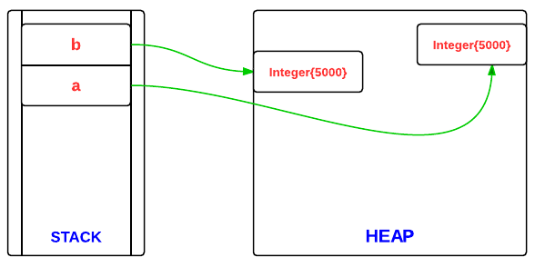
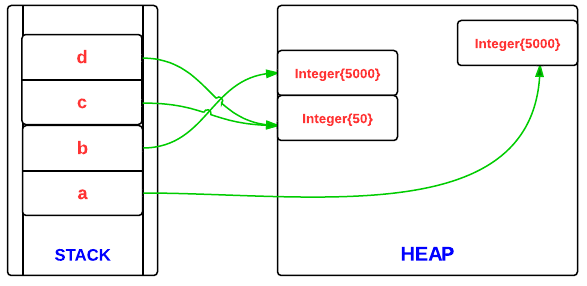

기본 자료형과 Wrapper class
자바는 Primitive type에 상응하는 각각의 Wrapper class를 가지고 있다.
이를 통해 기본 데이터 타입도 객체 단위로 처리할 수 있도록 하고, 기본 데이터를 다루는 여러 유용한 메서드를 사용할 수 있도록 한다.
1. Autoboxing, Auto-unboxing
primitive type과 wrapper class는 서로 호환되지 않아 사용에 불편함이 있었다.
하지만 이는 JDK 5.0에 Autoboxing, Auto-unboxing 이 추가되면서 해소되었다.
즉, JDK 5.0 이상부터는 primitive type과 wrapper class 간의 연산이 발생할때 자동적으로 Autoboxing, Auto-unboxing을 수행하여 서로 연산이 가능하게 한다.
# 컴파일 타임에 변경된다.
Autoboxing, unboxing은 컴파일러가 해주는 것으로 컴파일 타임에 코드를 바꿔주는 것이다.
| 컴파일 이전 | 컴파일 이후 |
|---|---|
| int i = 10; Integer intt = (Integer)i; |
Integer intt = Integer.valueOf(i); |
| int i = 10; Object obj = (Object)i; |
Object obj = (Object)Integer.valueOf(i); |
| Long lng = 100L; | Long lng = new Long(100L); |
| Integer intt = new Integer(10); int i = intt; |
Integer intt = new Integer(10); int i = intt.intValue(); |
2. Wrapper class의 장점
2.1. 자료형의 효율적인 관리
기본 자료형과 달리 근본이 클래스이기 때문에 여러 유용한 메서드를 제공한다.
2.2. 은닉화
primitive type의 경우 메모리에 할당된 바이트 수를 통해 대략 자료형을 유추할 수 있다. 하지만 Wrapper Class의 경우 기본적으로 인스턴스이기 때문에 모두 4byte 이다.
따라서 메모리에 할당된 것만으로 자료형을 유추할 수 없도록 은닉화해주는 역할을 한다.
2.3. Generic에서의 사용
Generic에서는 primitive type을 쓸 수 없고 Class 만 사용이 가능하다. 따라서 Wrapper class는 Generic에서 기본 자료형이 필요할 때 쓸 수 있다.
3. Wrapper class는 메모리 영역 어디에 저장되는가.
메서드 내부에서 호출될때를 기준으로 설명한다.
기본적으로 Class의 인스턴스는 메모리의 Heap 영역에 저장되고, primitive type은 stack에 저장된다. Wrapper class 역시 클래스의 인스턴스 이기 때문에 primitive type과 달리 Heap에 저장된다. stack에는 이를 가리키는 주소값을 가지고 있을 뿐이다.
관련된 내용은 JVM과 자바 메모리 구조 포스팅을 참고할 것.
3.1. Wrapper class를 사용할때 실수하기 좋은 위험한 버그
public static void main(String[] args) {
Integer a = 5000, b = 5000;
System.out.println(a == b); //false
Integer c = 50, d = 50;
System.out.println(c == d); //true
}
위 코드에서 첫번째 결과는 false를 리턴하고 두번째 결과는 true를 리턴한다.
이는 Wrapper class의 특징때문이다.

위는 첫번째 비교문과 관련된 메모리 할당 구조이다.
main 메서드가 호출되면서 Heap 영역에 실제 인스턴스가 저장되고 stack에는 이를 참조하는 메모리값이 저장된다. 즉, 첫번째 비교문에서 false가 리턴된것은 값이 비교된게 아니라 메모리 주소가 비교되었기 때문이다.

위는 두번째 비교문과 관련된 메모리 할당 구조이다.
첫번째와 달리 Heap 영역에 50은 하나만 저장되어 있고, stack영역의 c와 d는 같은 영역을 참조하고 있어 true가 리턴된 것이다. (값을 비교한게 아니라 메모리를 비교했는데 동일한 영역을 참조하고 있었던 것)
왜 이런 현상이 발생할까?
이는 Autoboxing 및 Integer class의 특징과 관련이 있다.
Integer c = 50; 이 수행될때 Autoboxing에 의해 실제로는 Integer.valueOf() 메서드가 호출된다. 그런데 Integer.valueOf() 메서드는 아래와 같다.
public static Integer valueOf(int i) {
if(i >= -128 && i <= IntegerCache.high)
return IntegerCache.cache[i + 128];
else
return new Integer(i);
}
위 코드에서 알 수 있듯 Integer class는 생성되는 객체를 캐시하는 캐시 메모리를 가지고 있다. -128 에서부터 IntegerCache.high의 크기만큼을 캐시해두고 같은 값을 생성할때는 기존 캐시를 활용하는 것이다.
이는 Wrapper class가 Immutable class이면서 자주 사용될 것 같은 값은 캐시하도록 구현되어 있기 때문이다.
# 그럼 값 비교는 어떻게 할까?
비교 대상 중 primitive 타입이 하나라도 있을 경우 알아서 값을 비교한다. 하지만 Wrapper class 끼리의 비교라면 위와 같이 메모리 주소를 비교하게 된다. 따라서 wrapper class 끼리의 비교인 경우에는 equals() 를 사용해야 한다.
[참고 문서]